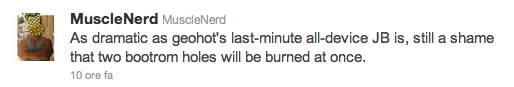
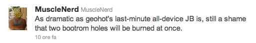

Gli ultimi due giorni sono stati probabilmente i più attivi degli ultimi anni sul fronte del jailbreaking! Ci sono tantissime novità che rischiano di confondere gli utenti normali.
Cerchiamo di fare un po’ di chiarezza iniziando dall’inizio (scusate il gioco di parole).
- p0sixninja e pod2g scoprono un nuovo exploit che viene chiamato SHAtter.
- p0sixninja e pod2g sfruttando SHAtter dichiarano che rilasceranno un nuovo tool per il jailbreak per TUTTI gli iDevices e funzionante su tutti i futuri firmware (essendo un exploit della bootroom).
- Venerdi 8 ottobre viene dichiarata l’ETA (data di rilascio) del nuovo tool: domenica 10 ottobre 2010 alle ore 10:10(ora italiana 12:10).
- Subito dopo avere dato la notizia della data ufficiale di rilascio p0sixninja e pod2g dicono che il nuovo jailbreak NON sarà per tutti gli iDevices ma solo per quelli di ultima generazione: iPad, iPhone 4, iPod Touch 4 e Apple Tv 2gen. Quindi niente jailbreak per gli iPhone 3gs come avevano promesso.
- GeoHot,fuori dalla scena da temo, appena viene a sapere della data di rilascio del nuovo tool creato da p0sixninja e pod2g si mette al lavoro per rilasciare un SUO tool che sfrutta un exploit diverso da quello sfruttato da pod2g e p0sixninja. La notizia del lavoro di GeoHot, che qualcuno metteva in dubbio, ci viene confermata dallo stesso p0sixninja:


- Il nome del tool su cui sta lavorando GeoHot è limera1n e il suo sito di riferimento è http://www.limera1n.com/ dove possiamo trovare un’interessante immagine dove ci sono TUTTI gli iDevices, iphone 3gs compreso, con il logo di limera1n:

- La novità più interessante è che limera1n sarà un tool di sblocco totale perchè oltre a sfruttare un bug della bootroom, diverso da quello usato da pod2g e p0sixninja, funzionerà su TUTTI gli iDevices: esattamente come avrebbe dovuto faregreenpois0n(il tool di p0sixninja e pod2g).
- A questo punto interviene veeence che dice che il jailbreak per gli iPhone 3gs verrà rilasciato non prima del rilascio del firmware 4.2 da parte di apple a Novembre:

- Interviene a questo proposito anche StealthBravo, una delle poche persone ad avere ancora accesso al blog di GeoHot, che spiega che il rilascio di limera1n avverrà l’11/10/10 data in cui ricorre l’anniversario della prima versione di limera1n(blackra1n):
{kind=link}
- In ultimo interviene comex che ci spiega che limera1n sarà un jailbreak di tipo untethered:

Questi sono i punti chiave della storia dell’ultimo jailbreak. Come vedete ci sono molte notizie che stanno trasmettendo i blog di mezzo mondo e proprio quest’abbondanza di notizia spesso fa cadere in confusione l’utente finale.
Concludo l’articolo facendovi notare come il rientro di GeoHot nel mondo del jailbreaking non sia stato ben visto dal dev team. Questo perchè, secondo loro, rilasciare due tool che sfruttano due exploit diversi in un lasso di tempo cosi ravvicinato è uno spreco che non fa altro che avvantaggiare la apple nel contrastare il mondo del jailbraking:
 

{kind=link}
C’è da dire che questa volta io mi sento in dovere di prendere le difese di GeoHot. Non perchè mi stia particolarmente simpatico, anzi, ma forse perchè pod2g e p0sixninja hanno gestito tutto in maniera molto confusionaria e, come dicevo in un precedente articolo, ci hanno preso in giro promettendoci cose, evidentemente, impossibili.
Infine faccio le sempre dovute precisazioni: diffidate da qualsiasi tool differente da quelli ufficiali. E’ probabile che nelle prossime ore ci sia la corsa al “fake tool” per infettare molti computer di utenti poco previdenti che hanno installato tool non ufficiali scaricati chi sa da dove. Scaricate solo i tool che verrano segnalati su queste pagine o dalle pagine del dev team.
Ricordo inoltre a tutti di seguire questo blog per eventuali sviluppi che, siate sicuri, non tarderanno.
Aggiornamento del 10/10/10 ore 02:37
- GeoHot rilascia a sorpresa il suo limera1n(http://limera1n.com/). Guida all’uso di LimeRa1n qua.
- p0sixninja dopo il rilascio di limera1n spiega che lui e pod2g hanno tre possibilità: a) Non rilasciare greenpois0n, B) Continuare con il programma e sprecare un secondo exploit, C) Ritardare il rilascio di greenpois0n in modo tale da farlo funzionare con l’exploit di GeoHot senza sprecare il proprio (SHAtter):

- Poco dopo, sempre p0sixninja, ci fa capire che probabilmente ritarderanno il rilascio di greenpois0n per farlo funzionare con l’exploit di GeoHot:

Aggiornamento del 12/10/2010 ore 15:55
- Il jailbreak rilasciato da GeoHot, limera1n, è di tipo unthered grazie ad un exploit trovato da comex. Quindi con futuri aggiornamento il jailbreak sarà ancora funzionante ma probabilmente diventerà di tipo tethered in quanto il bug scoperto da comex sarà corretto con il prossimo firmware.
- Mentre limera1n funziona benissimo il Crhonic dev Team implementa l’exploit di GeoHot in greenpois0n in modo tale da preservare SHAtter per futuri jailbreak (iPhone 5). GreenPois0n viene rilasciato il 12/10/2010 sul sito http://www.greenpois0n.com/:
{kind=link}
- Nella prima versione di GreenPois0n vengono trovati tantissimi bugs che impediscono a quasi tutti di effettuare il jailbreak. Al momento limera1n è mille volte più sicuro ed affidabile

Pingback: LimeRa1n di GeoHot è stato rilasciato! Ma è ancora una beta! | Mauro's Page